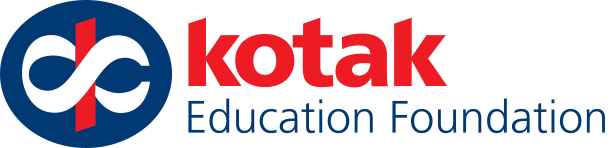

Kotak Kanya Scholarship 2026-27: ₹1.5 lakh a year for girl students, apply now
The Kotak Kanya Scholarship 2026-27, a CSR project of Kotak Mahindra Group companies implemented with Kotak Education Foundation, pays ₹1.5 lakh per year until degree completion to meritorious girl students from underprivileged backgrounds who join professional graduation courses such as engineering, MBBS, architecture, design or integrated LLB at NIRF or NAAC accredited institutes. Kotak Education Foundation confirms the 2026-27 scholarship, the amount and the eligibility on its own website and links its Apply Now button to the application partner, Buddy4Study. The two pages disagree on the last date: the partner listing shows 15 November 2026 while the foundation's page still shows 30 September 2026. Apply now rather than waiting for any last date.
At a glance
- Amount: ₹1.5 lakh per year, until completion of the professional graduation degree
- Who: girl students across India who passed Class 12 with at least 75% marks or equivalent CGPA
- Course: first year of a professional graduation programme in 2026-27 (engineering, MBBS, integrated LLB, integrated BS-MS or BS-Research, design, architecture and similar) at a NIRF or NAAC accredited institute of repute
- Income: annual family income not above ₹6,00,000
- Last date: 15 November 2026 on the Buddy4Study listing; the sponsor page still shows 30 September 2026 (stale). Apply now, do not wait
- Where: the Buddy4Study application linked from Kotak Education Foundation's official scholarship page; no application fee
Eligibility
- Girl students (merit-cum-means, pan-India)
- At least 75% marks or equivalent CGPA in the Class 12 board examination
- Secured admission to the first year of a professional graduation programme in the academic year 2026-27 at a NIRF or NAAC accredited institute of repute
- Annual family income not above ₹6,00,000
- Children of employees of Kotak Mahindra Group, Kotak Education Foundation and Buddy4Study are not eligible
Selection is based on rank order and is at the discretion of Kotak Education Foundation. The scholarship continues till degree completion, subject to the foundation's terms. Scholars also get mentorship, industry expert sessions, career-readiness support and mental wellness support, according to the listing.
How to apply
Checked on the live pages on 25 October 2026: Kotak Education Foundation's scholarship page shows the 2026-27 programme and its Apply Now button opens the Buddy4Study application. We did not register on Buddy4Study, so the steps below describe the route the official pages present, not a completed test. Buddy4Study registration asks for a mobile number, which we did not provide.
- Open Kotak Education Foundation's official scholarship page at kotakeducationfoundation.org/kotak-kanya-scholarship and choose Apply Now, or open the listing directly: Kotak Kanya Scholarship on Buddy4Study.
- You will reach the Buddy4Study application for Kotak Kanya (code KKGS5). Register or log in with your mobile number and email.
- Fill the application form with your personal, academic and family income details, exactly as your documents show them.
- Upload the documents the form asks for (full list below) and review every detail before final submission.
- Submit as early as possible. The listing shows 15-Nov-2026; the sponsor page still shows a passed 30-09-2026 date, so do not plan around a last date. Save a copy or screenshot of the submitted form.
Documents the application asks for
- Marksheet of the previous qualifying examination (Class 12)
- Income proof of parents or guardians (income certificate, or ITR if applicable)
- Bonafide student certificate or letter from the college
- College seat allocation document
- Masked Aadhaar card
- Bank passbook
- Passport-size photograph
- Photographs of the house
We read Kotak Education Foundation's official scholarship page and the public Buddy4Study listing on 25 October 2026, including the eligibility, benefits, documents and FAQ sections. We did not create an account, so any declaration steps inside the form itself were not seen.
Video guides
We searched YouTube on 25 October 2026 for a step-by-step application video for the Kotak Kanya Scholarship 2026-27 in English and in Malayalam. We could not verify one that matches the current 2026-27 application, so we are not linking any rather than risk outdated or unrelated instructions.
Stay safe
- There is no fee to apply. Buddy4Study itself runs a scholarship-fraud alert on the listing page: never pay anyone who promises selection.
- Apply only through the Buddy4Study application linked from Kotak Education Foundation's official page. Lookalike pages and agents are common around popular scholarships.
- The scholarship is merit-cum-means and selection-based; treat "guaranteed scholarship" claims as fraud.
Frequently asked questions
I am already in the first year of my degree. Can I apply? Yes, if you were admitted to the first year in the academic year 2026-27 and meet the marks and income criteria, per the foundation's FAQ.
Is the scholarship only for engineering? No. It covers professional graduation courses including engineering, MBBS, integrated LLB, integrated BS-MS or BS-Research, design and architecture at accredited institutes of repute.
Which last date is correct? The application partner's live listing shows 15 November 2026. The foundation's own page still shows 30 September 2026, which has passed and appears not to have been updated. Apply now rather than relying on either.
Is the ₹1.5 lakh guaranteed? No. Selection is based on rank order at Kotak Education Foundation's discretion, and the amount depends on fulfilling the eligibility criteria under the foundation's terms.
Is this a government scholarship? No. It is a corporate CSR scholarship of Kotak Mahindra Group companies, implemented with Kotak Education Foundation, with Buddy4Study as the application partner.
Sources: Kotak Kanya Scholarship (Kotak Education Foundation, official page), Kotak Kanya Scholarship listing (Buddy4Study, official application partner). Checked on the live pages on 25 October 2026. This is an AiCoN explainer, not a Kotak publication.